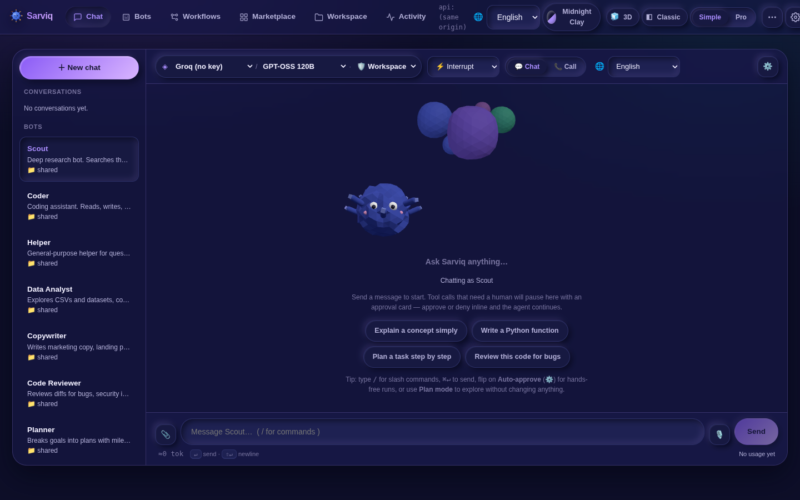
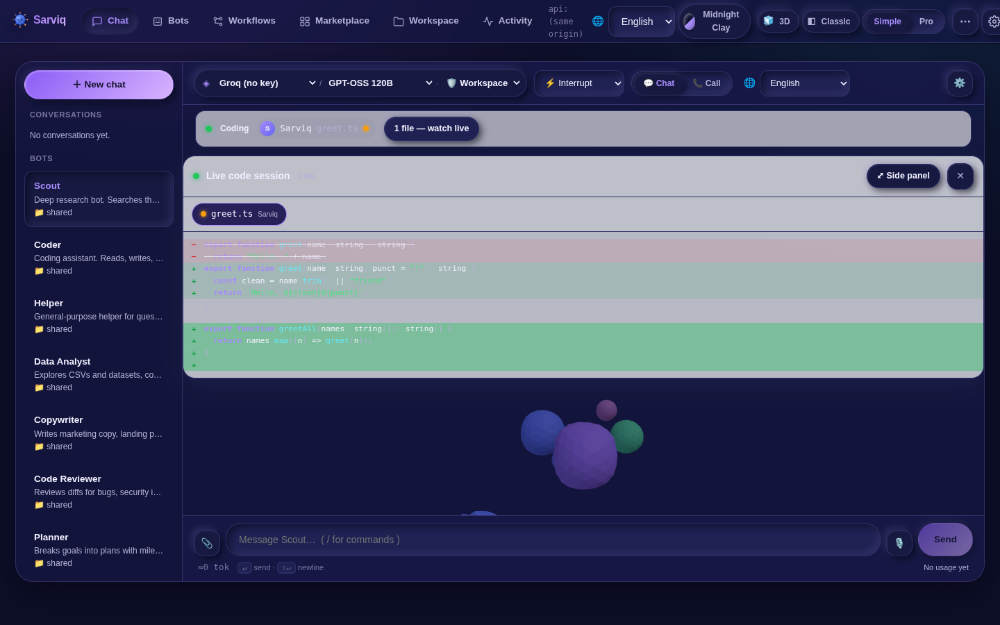
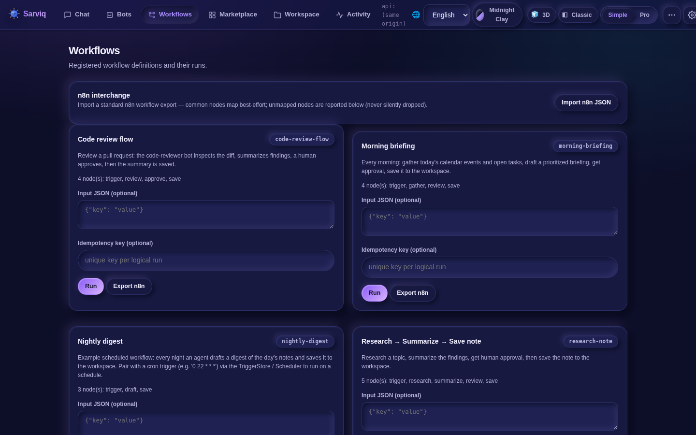
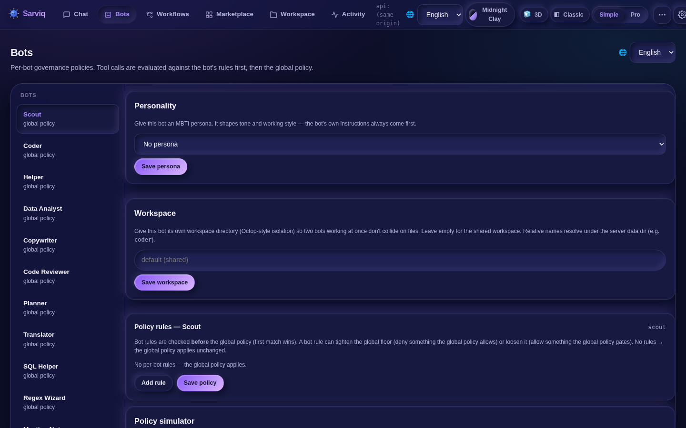
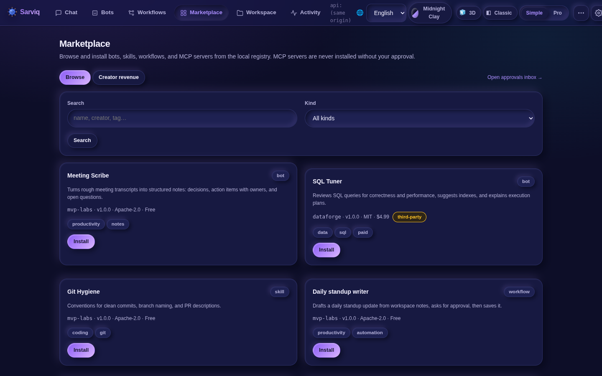
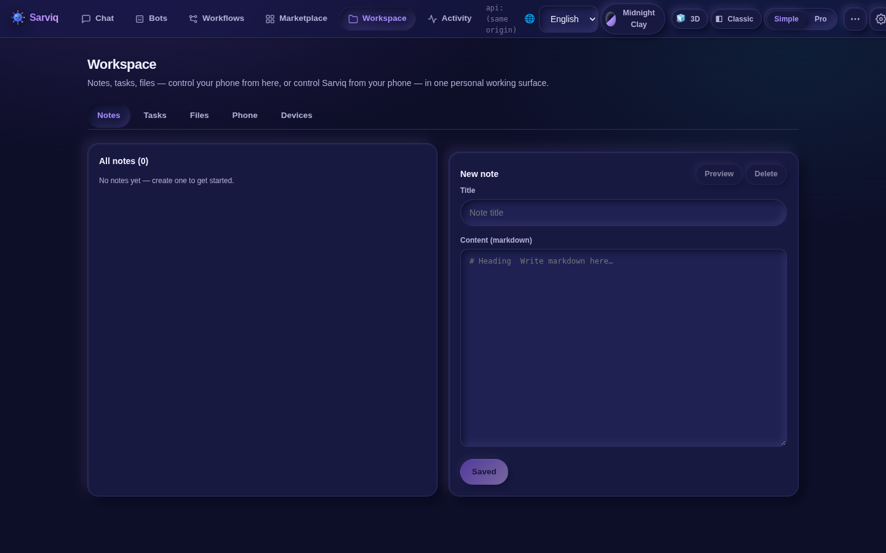
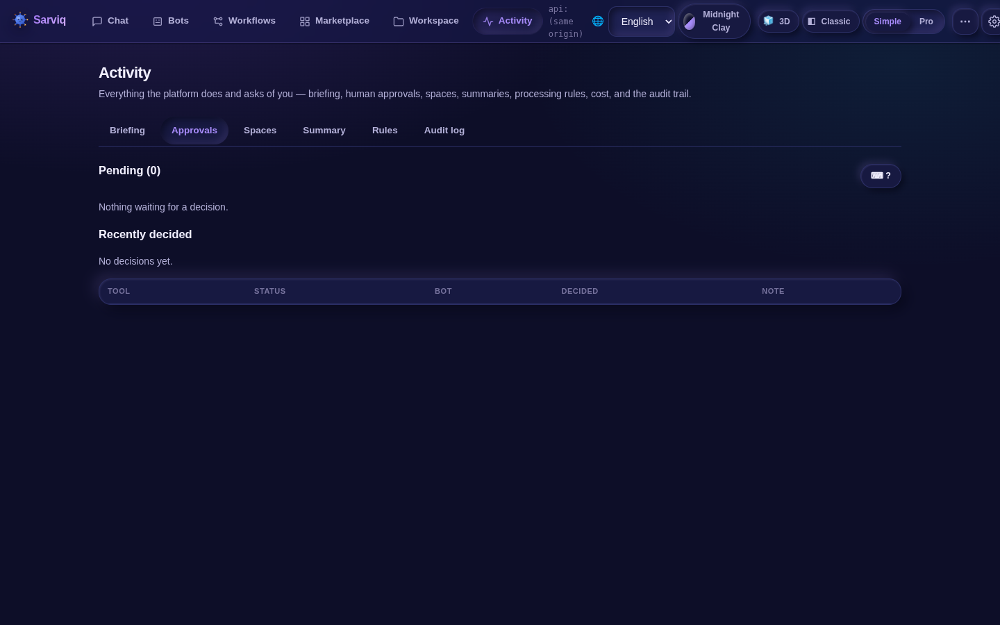

💬
Chat with 3D pets
Six interactive WebGL companions — Sarviq, Ocky, Nubi, Plip, Bolt, Wisp — react to your conversation: thinking, working, happy, sleeping. Click one; it bounces.
Open-source · Apache-2.0 · local-first ready
One platform for every AI agent you run. Chat with 3D companion pets, field bot teams, draw n8n-style workflows, watch agents write code live, gate every tool call with approvals — with 180+ models behind a single key.
Pronounced SAR-vik — from Sanskrit Sarva (all) + IQ.
Product
Six destinations. Zero tab-switching. Every feature is wired into the others — bots run workflows, workflows request approvals, notes feed your briefing.
Six interactive WebGL companions — Sarviq, Ocky, Nubi, Plip, Bolt, Wisp — react to your conversation: thinking, working, happy, sleeping. Click one; it bounces.
Specialist bots (Coder, Scout, Reviewer…) with per-bot governance policies, team import/export, delegation with peer approval, and shared workspaces.
n8n-style canvas with if/set/code nodes. Import n8n JSON directly — unmapped nodes are reported, never silently dropped.
Watch agents write code as it happens — animated diffs stream in line by line, green additions, red removals, per-file bot badges.
Deny-by-default tool registry, inline approval cards, full audit trail, encrypted credential vault, policy simulator.
Notion-style notes with table and kanban views. Notion ZIP/HTML import. Notes attach to bot context and feed your morning briefing.
Per-bot live screen view — watch the agent drive, click and type yourself, or teach it by recording your own actions into reusable workflows.
Two apps: Companion (drive your PC from your phone) and Phone Agent (drive your phone from your PC). Pair in seconds with a QR code.
OpenRouter-style routing across frontier models plus local Ollama and BYO-CLI engines (Claude Code, Codex, Grok…). Cost-aware fast router included.
Light, dark, midnight, porcelain, ocean — claymorphism + glassmorphism, subtle 135° gradients, Simple and Pro modes, reduced-motion respected.
Live code sessions
This is a live re-creation of Sarviq's code session view — the agent's edits stream in as animated diffs while it works.
Screenshots
Captured live from the current build — midnight theme, real bots, real workflows.







Downloads
Free and open-source. Desktop apps and Android APKs ship from GitHub Releases.
Windows, macOS & Linux — Tauri app with the full console: chat, bots, workflows, code sessions, computer use.
Get from GitHub ReleasesSarviq Companion — drive your PC from your phone.
Phone Agent — drive your phone from your PC.
APKs install directly (v0.1.0-alpha). Prefer browsing? Get them from GitHub Releases.
Docs
From zero to your first autonomous run in five steps.
Grab the desktop app for your OS from GitHub Releases, or run the web console + API from source with npm install in apps/api and apps/web.
Open Accounts & API keys and paste your key — Groq, OpenRouter, or any OpenAI-compatible endpoint. Prefer local? Point Sarviq at Ollama or a BYO-CLI engine instead. No key ever leaves your machine except to the provider you chose.
In Bots, pick a specialist (Coder, Scout, Reviewer…) or craft your own with a persona and per-bot tool policy. Chat with it in Chat — tool calls that need a human pause for an inline approval card.
Open Workflows, run a built-in flow (try Morning briefing), or import your n8n JSON — common nodes map automatically. Bots can trigger workflows from chat, and workflows can call a bot turn as a node.
On desktop, open the companion panel to show the pairing QR code; scan it in the Android app. On your LAN it pairs directly; with SARVIQ_PUBLIC_URL set, it pairs over HTTPS from anywhere.
Preferences holds five themes (light, dark, midnight, porcelain, ocean), Simple/Pro modes, English + Hindi UI, voice notes, and your pet picker — six 3D companions to choose from.
Blog & vlog
A narrated walkthrough of the whole platform — chat, pets, bots, workflows, code sessions, and the Android apps.
Watch the guideChatbots, workflow tools, note apps, and device controllers each solve a slice. Sarviq's bet: the slices are the same agent wearing different hats — so they should share memory, approvals, and context.
Show the agent how you do a repetitive task once — Sarviq records the clicks, keystrokes, and decisions, then compiles them into a reusable workflow you can schedule, share, or hand to a bot.